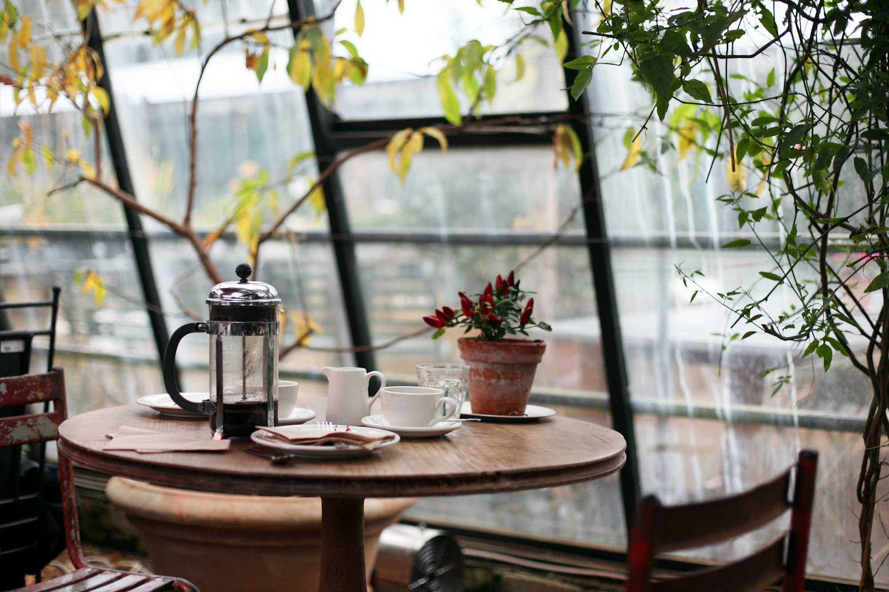
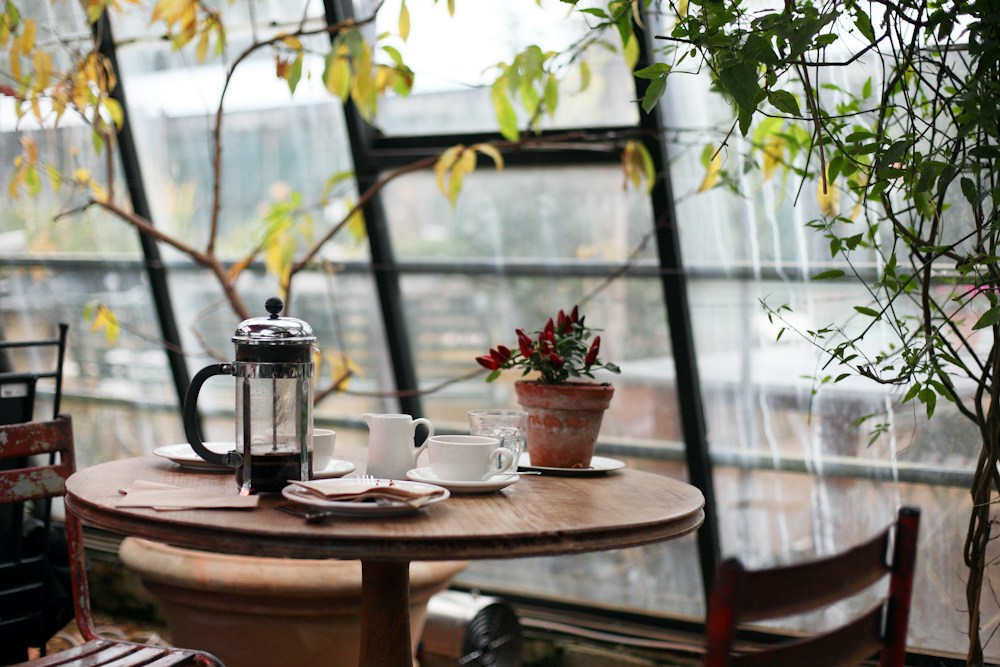

CAFFÈ LATTE

COFFEE, SWEETS & SLOW MOMENTSSCROLL DOWN ↓
WELCOME
日常のすぐそばに、心ほどける場所を。

ゆっくり、のんびり、自分らしく。OUR STORY 私たちについて
自然と調和した、
心安らぐカフェ。
CAFE KOMOREBIは、日常の忙しさを忘れ、
ゆったりとした時間を過ごしていただくための
小さなカフェです。
木の温もりを感じる店内で、こだわりのコーヒーや
手作りスイーツをお楽しみいただけます。
お一人での読書や、ご友人とのおしゃべりなど、
思い思いの時間をお過ごしください。
A peaceful place, just for you.
VISIT US 店舗情報・アクセス
あなたのペースで、
お立ち寄りください。
ゆったりとした時間をご用意して、お待ちしています。
- 所在地
- 東京都渋谷区神宮前1丁目
※ 架空の店舗所在地です。 - 営業時間
- 10:00〜18:00
- 定休日
- 毎週水曜日
- 最寄り駅
- JR原宿駅
周辺エリアの地図を開きます。店舗の位置を示すものではありません。

A quiet corner in your everyday life.
今日も、いいひと息を。
SEE YOU AT KOMOREBI.